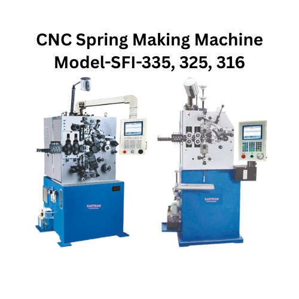

CNC Spring Making Machine
SFI-335 / SFI-325 / SFI-316
Compact CNC spring making machines for precise, high-efficiency production.

Three-servo CNC spring making setup
- Three servo motors with CNC control system for stable precision.
- Easy to operate and suitable for various high precision springs.
- Durable main parts made from high-quality materials.
- Advanced technology with high precision for spring manufacturing.
- Customer-favorite choice for spring production.
Machine Features
Details extracted from the provided SFI-335/325/316 image.
This machine is made up of three servo motors, CNC control system, and etc. It is easy to operate, suitable for making various high precision springs. The main parts of the machine are carefully made of highly durable material. The machine features advanced technology and high precision, which is customer's favorite choice for making springs.
Specification
Specifications extracted from the provided SFI-335/325/316 image.
| Model | SFI-335 | SFI-325 | SFI-316 |
|---|---|---|---|
| Wire Diameter (mm) | 0.8-3.5 | 0.5-2.5 | 0.3-1.6 |
| Outside Diameter (mm) | Max 70 | Max 42 | Max 32 |
| Production Rate (pcs/min) | <= 200 | <= 250 | <= 300 |
| Feeding Length (mm) | +/- 0.01 - +/- 9999.99 | +/- 0.01 - +/- 9999.99 | +/- 0.01 - +/- 9999.99 |
| Wire Feed Speed (m/min) | 0-127 | 0-135 | 0-135 |
| Cam Setting Value | +/- 0.1 deg - +/- 359.9 deg | +/- 0.1 deg - +/- 359.9 deg | +/- 0.1 deg - +/- 359.9 deg |
| Wire Feed Servo (kw) | 4.4 | 2.7 | 1.5 |
| Cam Servo (kw) | 4.4 | 2.7 | 1.5 |
| Pitch Servo (kw) | 1.5 | 1.0 | 0.4 |
| Power AC | Three phase 380V AC 50HZ | Three phase 380V AC 50HZ | Three phase 380V AC 50HZ |
| Dimensions L x W x H (mm) | 1700 x 1500 x 1850 | 1280 x 900 x 1650 | 1050 x 880 x 1600 |
| Machine Weight (kg) | 1350 | 750 | 550 |